| data-transition-duration: | |
|---|---|
| 1000 | |
| skip-help: | true |
| css: | style.css |
| substep: | true |
| slide-numbers: | true |
|---|
Operating Systems
Memory Management
Ahmad Yoosofan
University of Kashan
Spring 2020
بخشهای درونی یک فرآیند در حالت کلی

مشخص شدن آدرسهای حافظهٔ فرآیند


address binding, loader
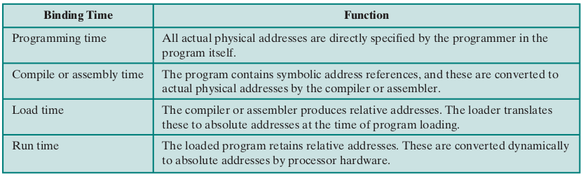address binding, linker
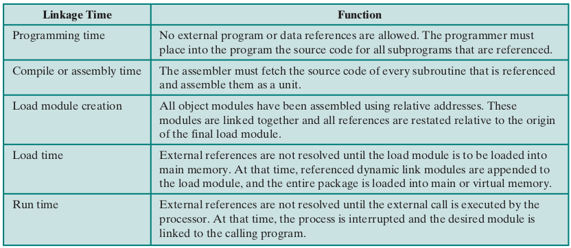address binding, absolute and relocate loader

چگونگی کارکرد پیوند زدن تابعها از پروندههای گوناگون
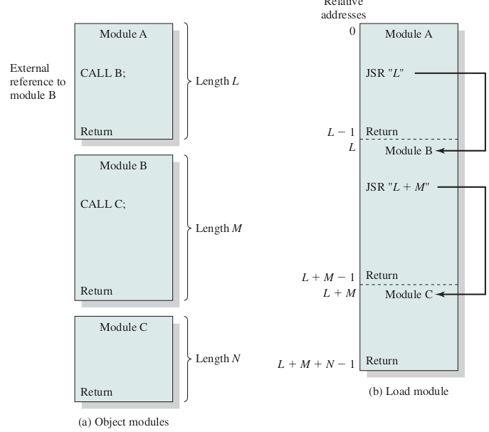تخصیص حافظهٔ پیوسته به فرآیندها
به فرآیندها حافظهٔ پیوستهای داده شود.
بخشبندی ثابت حافظه
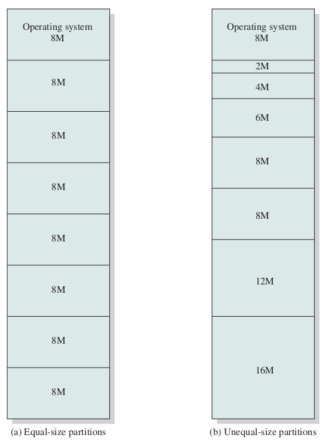تخصیص حافظه به فرآیندها در حالت بخشبندی ثابت حافظه

مشکلات بخشبندی ثابت
- انعطاف بسیار پایین
- محدودیت زیاد برای اندازهٔ فرایند در حالی که فضای حافظه خالی است.
- تکه تکه شدن یا پراکندی داخلی internal fragmentation
- هدر رفت حافظه
- بخشی از حافظه که به فرایند داده شده است فقط برای آن فرایند است.
- یعنی اگر بخشی از آن را فرایند به کار نبرد هدر رفته است.
تکه تکه شدن (پراکندگی) داخلی حافظه
Internal Memory Fragmentation
به کارگیری حافظهٔ نسبی برای نگهداری مکان چندین فرآیند در حافظه

حفاظت از حافظه به کمک ثباتهای پایه و حد

بخشبندی پویای حافظه

ارتباط میان آدرس فیزیکی و آدرس منطقی در آدرس دهی نسبی به کمکِ واحد مدیریت حافظه (MMU)

حافظهٔ فرآیندها در سیستم عامل CTSS

اثر به کارگیری حافظهٔ پویا

برگزیدن فضای آزاد برای فرآیند تازه وارد
- اولین برازش(First Fit)
- بهترین برازش(Best Fit)
- بدترین برازش(Worst Fit)
- درپی برازش (برازش بعدی Next Fit)

تکه تکه شدن (پراکندگی یا پارگی) خارجی
External Fragmentation
Compaction
حافظهٔ پویای رفاقتی Buddy system
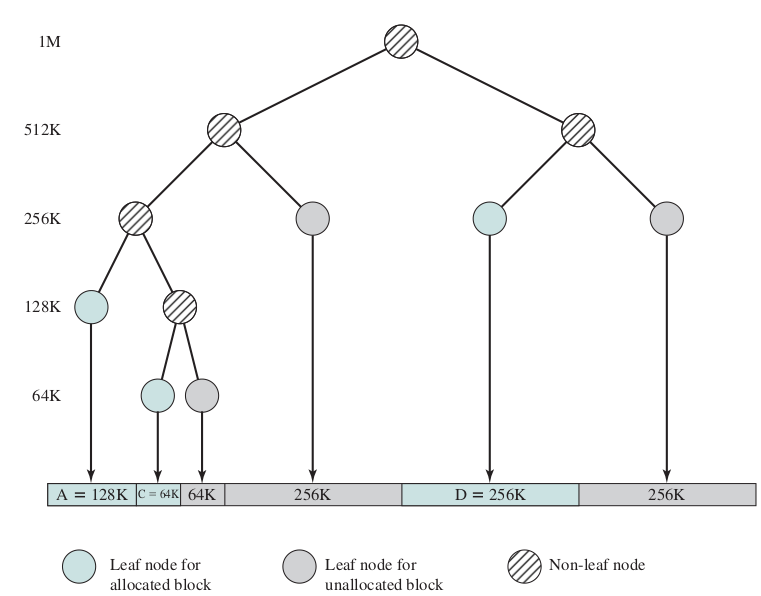
الگوریتم اجرا
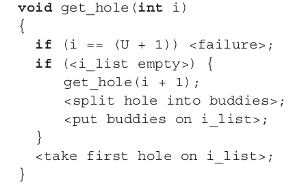جابجا کردن فرآیند میان حافظهٔاصلی و حافظهٔ جانبی (دیسک)، شکل سادهای از حافظهٔ مجازی

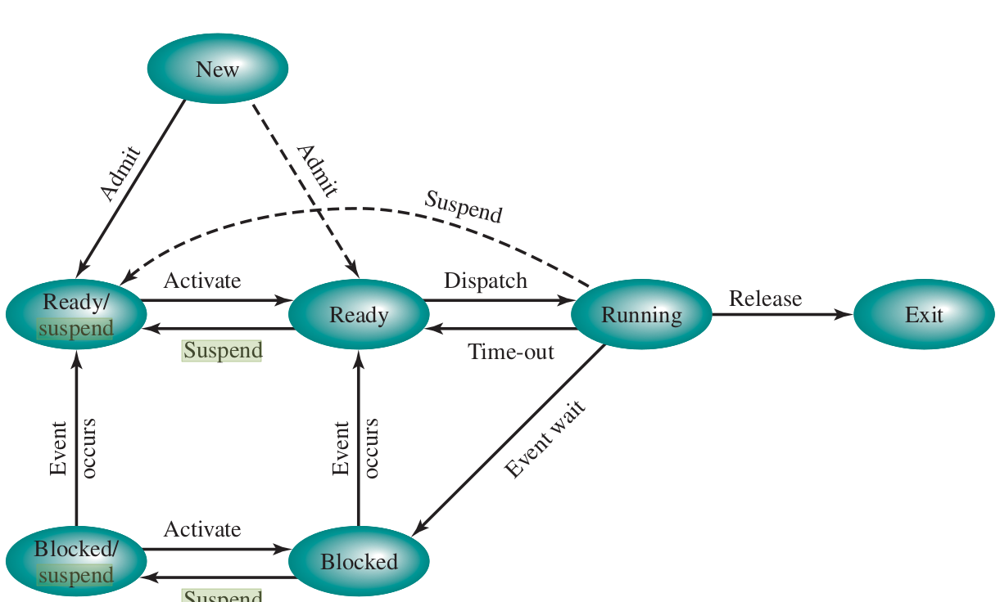
overlay

سلسله مراتب حافظه

{kind=link}
سلسله مراتب حافظه جزئیتر

{kind=link}
حافظهٔ نهان
wikipedia.org Cache,hierarchy wikipedia.org CPU_cache
{kind=link}
حافظهٔ نهان دو سطحی در یک پردازندهٔ واقعی

{kind=link}
الگوریتم خواندن و نوشتن از حافظهٔ نهان
{kind=link}
Effective Access Time (EAT)
- tm : زمان دسترسی به حافظهی اصلی
- tc : زمان دسترستی به حافظهی نهان
- hc : ضریب اصابت به حافظهی نهان
اگر ضریب اصابت (یا نسبت اصابت) برای 0.95 باشد و سرعت دسترسی به حافظهٔ اصلی 100 میکرو ثانیه باشد و سرعت دسترسی حافظهٔ نهان ۱ میکرو ثانیه باشد در این صورت زمان دسترسی مؤثر برابر خواهد بود با
- EAT = 0.95 * 1 + (1 − 0.95) * (100 + 1)
- EAT = 0.95 + 0.05 * 101
- EAT = 0.95 + 5.05
- EAT = 5.1 ms

| ms | us | ns | action |
| 0.5 | CPU L1 dCACHE reference | ||
| 1 | speed-of-light (a photon) travel a 1 ft (30.5cm) distance | ||
| 5 | CPU L1 iCACHE Branch mispredict | ||
| 7 | CPU L2 CACHE reference | ||
| 71 | CPU cross-QPI/NUMA best case on XEON E5-46 | ||
| 100 | MUTEX lock/unlock | ||
| 100 | own DDR MEMORY reference | ||
| 20 | 000 | Send 2K bytes over 1 Gbps NETWORK | |
| 250 | 000 | Read 1 MB sequentially from MEMORY | |
| 10 | 000 | 000 | DISK seek |
| 10 | 000 | 000 | Read 1 MB sequentially from NETWORK |
| 30 | 000 | 000 | Read 1 MB sequentially from DISK |
| 150 | 000 | 000 | Send a NETWORK packet CA -> Netherlands |
حافظهٔ صفحهبندی شده
Paging
شکل سادهٔ صفحهبندی


سختافزار صفحهبندی

بخشبندی ثبات آدرس در حافظهٔ صفحهبندی شده

یک کامپیوتر با ۳۲ بایت حافظه و صفحههای چهار بایتی
- Draw Memory Frames
- some First Frames for os
- Put a process into Memory (not continuous or in order)
- Fill page table
- Convert a Logical Addfress to Physical Address
- Put another process into Memory
یک کامپیوتر با حافظهٔ ۱۲۸ بایتی و صفحههای ۸ بایتی

یک حافظهٔ ۳۲ بایتی با صفحههای ۴ بایتی

تغییرات فضاهای آزاد پیش و پس از تخصیص حافظه به یک فرآیند

تغییرات حافظه برای چند فرآیند


تبدیل آدرس منطقی به آدرس فیزیکی در حافظهٔ صفحهبندی شده
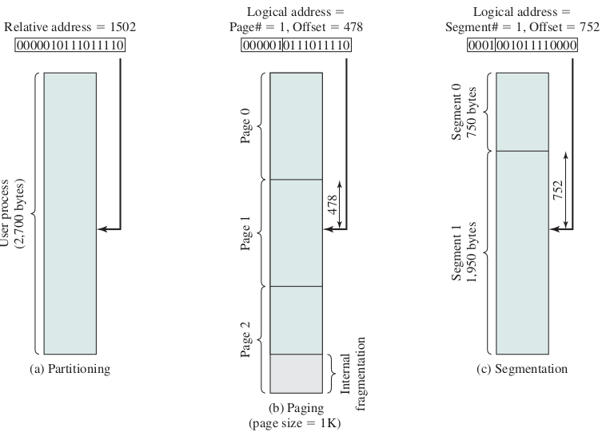
Address Translation

اندازهٔ صفحه
کوچک یا بزرگ بودن اندازهٔ صفحهها (همان قابهای حافظه) بر روی موضوعهای گوناگونی اثر دارد.
حفاظت از حافظهٔ صفحهبندی شده

اشتراک گذاری در حافظهٔ صفحهبندی شده


سلسه مراتب حافظه

Memory Access
Paging Memory Access

TLB

Effective Access Time
- tt : زمان دسترسی به حافظهی نهان جدول صفحه
- tc : زمان دسترستی به حافظهی نهان
- tm : زمان دسترسی به حافظهی اصلی
- ht : ضریب اصابت به حافظهی نهان جدول صفحه
- hc : ضریب اصابت به حافظهی نهان
با فرض برابر بودن نسبتهای اصابت و زمانهای یکسان برای دسترسی به حافظهٔ نهان و حافظهٔ TLB خواهیم داشت
زمان دسترسی مؤثر = زمان دسترسی به جدول صفحه + زمان دسترسی به حافظه
Reduce speed
- Max memory supported : 64 byte = 2 ^ 6
- frame size = page table 2 byte
- 2 ^ 6 / 2 ^1 = 2 ^ 5 = 32
- ?
- Max memory supported : 64 byte = 2 ^ 6
- frame size = page table 4 byte
- 2^6 / 2^2 = 2^4 = 16
- ?
- Max memory supported : 64 byte = 2 ^ 6
- frame size = page table 8 byte
- 2^6 / 2^3 = 2^3 = 8
- ?
- 32 bit address
- 1024 size of frame?
- 32 - 10 = 22
- 2^22 Frame
- 2^22 page table entry
- Problem
- 32 bit address
- 2^20 size of frame?
- 32 - 20 = 12
- 2^12 Frame
صفحهبندی دو سطحی
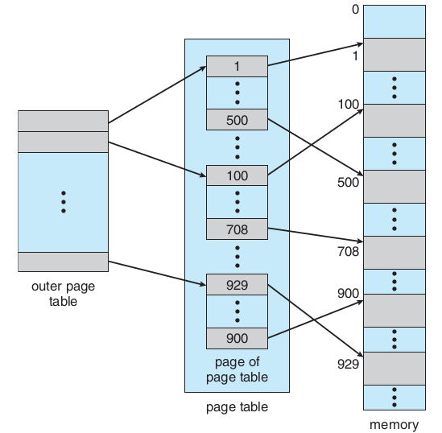آدرسدهی در صفحهبندی دو سطحی

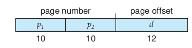
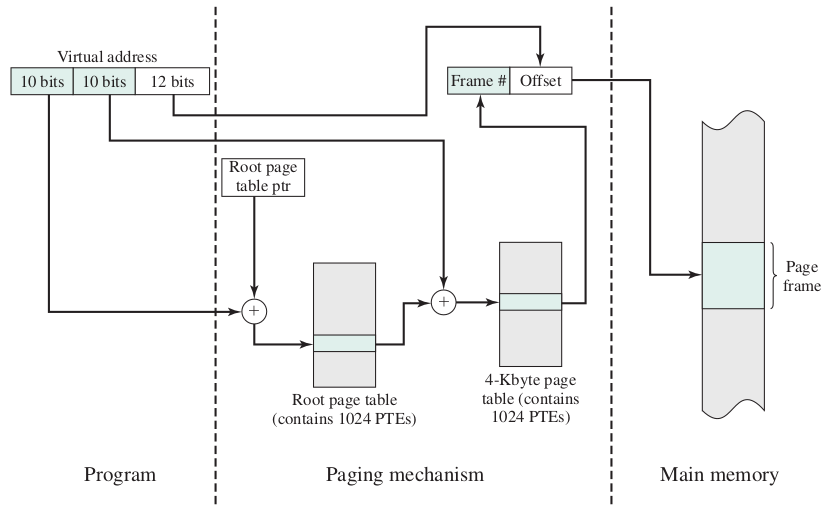

صفحهبندی دو سطحی ۶۴ بیتی
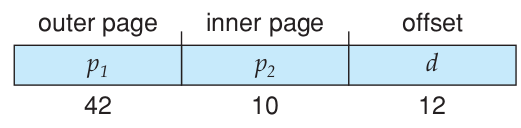صفحهبندی سه سطحی ۶۴ بیتی

صفحهبندی با جدول صفحهٔ معکوس

حافظهٔ مجازی


آدرسدهی حافظهٔ مجازی
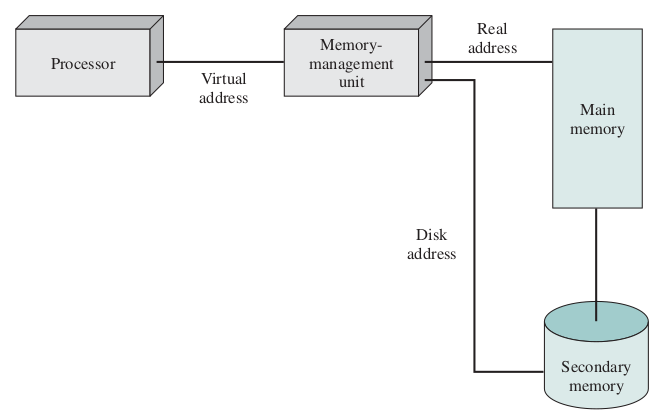


Effective Access Time of Virtual Memory
- effective access time = (1 − p) × ma + p × page fault time.
- effective access time = (1 − p) × (200) + p (8 milliseconds) = (1 − p) × 200 + p × 8,000,000 = 200 + 7,999,800 × p
- 220 > 200 + 7,999,800 × p,
- 20 > 7,999,800 × p,
- p < 0.0000025
تخصیص قابها Allocation of frames
- درخواستی On demand
- پیش صفحهبندی prepaging
روشهای تخصیص تعداد قاب به هر فرآیند
مجموعهٔ مقیم برای هر فرآیند.
- تعداد ثابت fixed-allocation
- تعداد متغیر variable-allocation
بخش کردن قابها میان فرآیندها
- تعداد برابر
- تعداد به نسبت اندازهٔ فرآیند
چگونگی برگزیدن یک قاب برای تخصیص به یک فرآیند
- تخصیص محلی
- تخصیص سراسری
سیاستهای پاک کردن
- پاک کردن درخواستی demand cleaning
- پیش پاک کردن precleaning
کپی کردن هنگام نوشتن


جایگزینی صفحه
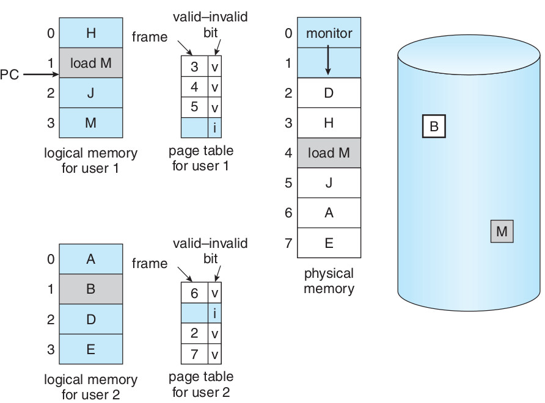
- frame-allocation algorithm and a page-replacement algorithm.
- reference string.
- 0100, 0432, 0101, 0612, 0102, 0103, 0104, 0101, 0611, 0102, 0103, 0104, 0101, 0610, 0102, 0103, 0104, 0101, 0609, 0102, 0105
- At 100 bytes per page, this sequence is reduced to the following reference
- string:
- 1, 4, 1, 6, 1, 6, 1, 6, 1, 6, 1
- تعداد خطای صفحه بسته به تعداد قابهای تخصیص داده شده

الگوریتم جایگزینی FIFO

Belady’s anomaly

الگوریتم جایگزینی بهینه (Optimal)

الگوریتم جایگزینی LRU

How to Impolement LRU
- counters
- stacks
Use of a stack to record the most recent page references.

الگوریتم جایگزینی کمترین فراوانی LFU
Least Frequently Used
الگوریتم جایگزینی بیشترین فراوانی MFU
page-replacement algorithm is based on the argument that the page with the smallest count was probably just brought in and has yet to be used
Not Recently Used Page Replacement Algorithm
NRU
الگوریتم جایگزینی بخت دوم (second chance) یا ساعت (clock)
بیت دسترسی access bit یا بیت ارجاع reference bit یا بیت استفاده use bit

الگوریتم جایگزینی ساعت بهبود یافته
بیت تغییر modify bit یا بیت کثیف dirty bit
(بیت دسترسی ، بیت تغییر)
- Form 1
- Search for (0, 0)
- Search for (1, 0) and access bit = 0
- goto 1
- Form 2
- Search for (0, 0)
- Search for (1, 0) and access bit = 0
- Search for (0, 0)
- Search for (1, 0)
الگوریتم میانگیر صفحه
PAGE BUFFERING
کوبیدگی (Thrashing)

اصل محلی بودن

روش شناسایی کوبیدگی به کمک مدل مجموعهٔ کاری


روش شناسایی کوبیدگی به کمک فراوانی خطای نبود صفحه
page-fault frequency ( PFF )

روشهای رویارویی با کوبیدگی پس از شناسایی آن
معلق کردن تعدادی فرآیند برگزیده شده
پروندههای نگاشت شده به حافظه (Memory-Mapped Files)

ورودی و خروجیهای نگاشت شده به حافظه
(I/O-Mapped Files)
قفل کردن برخی صفحهها
Lock pages
اثر نوع برنامهنویسی و کامپایلر بر حافظهٔ مجازی
1 void work_with_array_row_by_row(void){ 2 double xa[1000][1000]; 3 int i,j; 4 for(i=0;i<1000;i++) 5 for(j=0;j<1000;j++) 6 xa[i][j]=i*1000+j; 7 }
1 void work_with_array_column_by_column(void){ 2 double xa[1000][1000]; 3 int i,j; 4 for(j=0;j<1000;j++) 5 for(i=0;i<1000;i++) 6 xa[i][j]=i*1000+j; 7 }
قطعهبندی (segmentation)

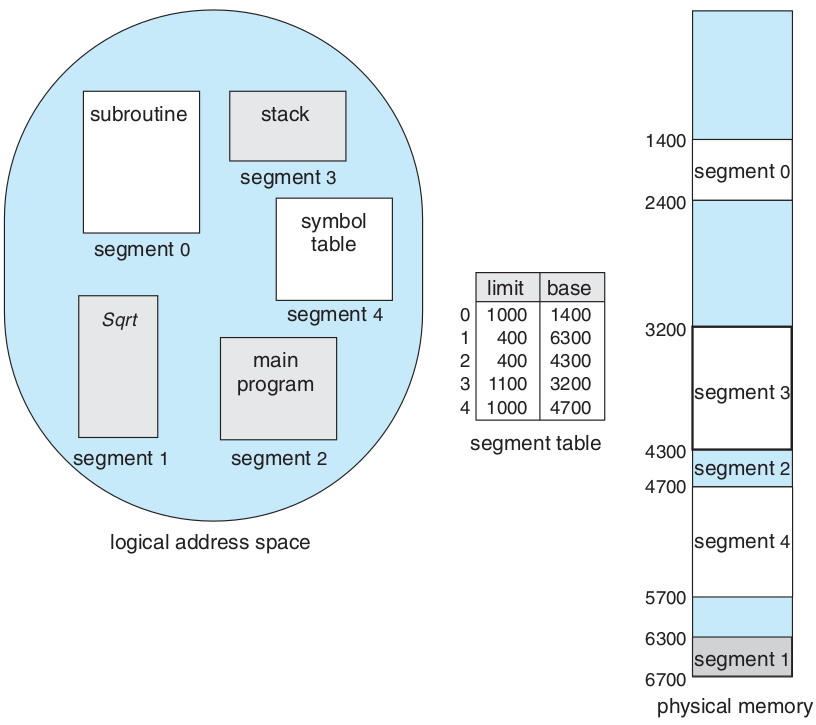


اشتراک گذاری در قطعهبندی
Sharing segments
ترکیب قطعهبندی و صفحهبندی
مانند صفحهبندی دو سطحی با این تفاوت که در سطح یکم قطعهبندی انجام میشود و در سطح دوم صفحهبندی انجام میشود.

ساختار حافظهٔ قطعهبندی شده در پردازندههای اینتل ۳۲ بیتی (IA32)

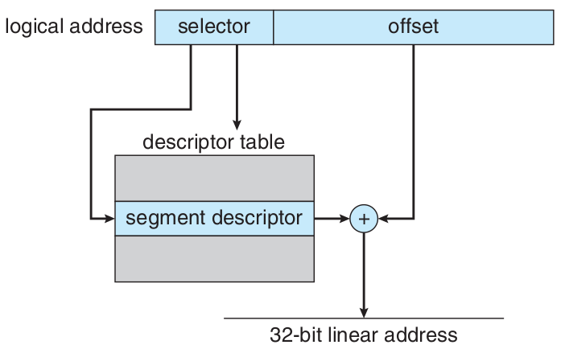
- بیشترین حافظهای که میتواند پشتیبانی کند: 4GB
- بیشترین تعداد قطعه در یک فرآیند: 16KB
- بیشترین تعداد قطعهٔ اختصاصی برای یک فرآیند: 8KB برای دسترسی این بخش local descriptor table ( LDT ) به کار برده میشود.
- بیشترین تعداد قطعهٔ اشتراکی برای یک فرآیند با دیگر فرآیندها: 8KB برای دسترسی به این بخش global descriptor table ( GDT ) به کار برده میشود.
| شمارهٔ قطعه | اختصاصی یا اشتراکی | حفاظت |
|---|---|---|
| 13 | 1 | 2 |
ساختار حافظهٔ صفحهبندی شده در پردازندههای اینتل ۳۲ بیتی (IA32)
| جدولِ صفحهٔ یکم | جدولِ صفحهٔ دوم | جابجایی |
|---|---|---|
| ۱۰ | ۱۰ | ۱۲ |
| جدولِ صفحه | جابجایی |
|---|---|
| ۱۰ | ۲۲ |

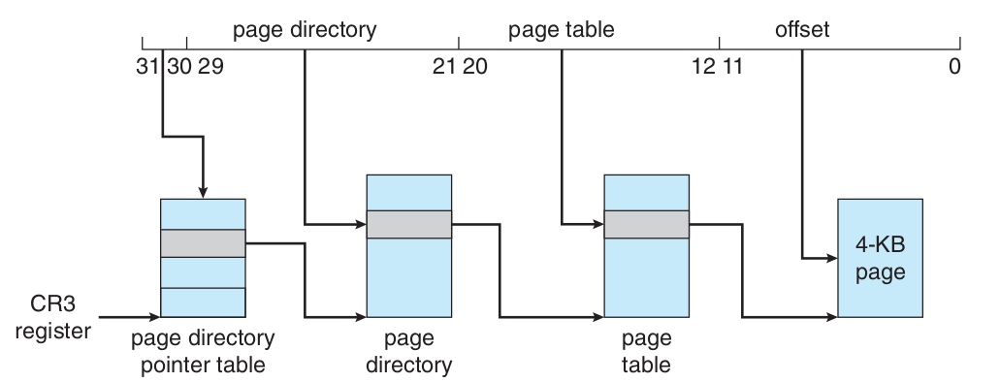

ساختار حافظه در پردازندههای «اِ اِم دی» ۶۴ بیتی (AMD64 یا x86_64 )